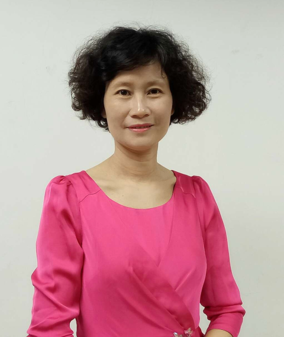

Jiannong Cao
Department of Computing, The Hong Kong Polytechnic University
Hong Kong SAR, China
Professor Cao is currently the Otto Poon Charitable Foundation Professor in Data Science, Chair Professor of Distributed and Mobile Computing in the Department of Computing at The Hong Kong Polytechnic University (PolyU). He is also the Vice President (Education) and Director of the Institute for Higher Education Research and Development (IHERD) at PolyU. He served as Head of the Department of Computing, Dean of the Graduate School, and Head of the College of Undergraduate Researchers and Innovators (CURI), and the founding director of Research Institute for AIoT and University Research Facility in Big Data Analytics at PolyU.
Professor Cao is a member of Academia Europaea, a fellow of the Hong Kong Academy of Engineering, a fellow of IEEE, a fellow of the CCF, and a distinguished member of the ACM. He served as the Chair of the Technical Committee on Distributed Computing of the IEEE Computer Society from 2012 to 2014. In 2017, he received the Overseas Outstanding Contribution Award from the China Computer Federation.
Education 4.0: Higher Education Transformation in the Era of AI
Abstract: Higher education is entering a period of rapid disruption driven by artificial intelligence, digital technologies, changing workforce needs and evolving learner expectations. Universities must therefore adapt their education model to remain relevant, competitive and impactful. In this paper, we propose Education 4.0 (E4.0) as a strategic response to this changing landscape, advancing a paradigm shift towards student-centred, personalised and competency-based education. We outline its educational foundations and five institutional objectives, and present the SCALE framework to coordinate curriculum redesign, AI capability development, AI-enabled education platforms, linked data, systems and processes, and evidence-based measurement and governance. Then, we translate this vision into actions across curriculum, people, learning support, services and collaboration. We further present how The Hong Kong Polytechnic University is advancing E4.0 through strategic initiatives and educational practices that connect curriculum transformation with institutional support. These efforts provide a reference for universities pursuing student-centred, personalised and competency-based education in the AI era.
Kongkiti Phusavat
Department of Industrial Engineering, Kasetsart University
Bangkok, Thailand
Dr. Kongkiti Phusavat is the Senior Professor at Department of Industrial Engineering, Kasetsart University in Bangkok, Thailand. Dr. Phusavat is the recipient of Thailand Research Fund (TRF) Senior Research Scholar. This award is deemed as one of the country's most distinguished awards. Dr. Phusavat earned his master's and doctoral degrees from the Department of Industrial and Systems Engineering, Virginia Polytechnic Institute and State University or Virginia Tech, USA. Dr. Phusavat attended Texas Tech University for his undergraduate study in Industrial Engineering after earning his high school diploma in Bakersfield, California, USA.
His research and work interests include human learning, performance measurement, productive workplace and workplace learning, quality management, acquisition logistics, design process and systems engineering. Dr. Phusavat is the author of two books relating to productivity with the titles of “Productivity Management in an Organization: Measurement and Analysis” and “Human Learning for Productive and High-Performance Workplace”, published in 2013 and 2021 respectively. Dr. Phusavat has published more than 140 referred journal articles since 2006.
Dr. Phusavat is currently the Editor in Chief of International Journal of Innovation and Learning. It is a Scopus-indexed journal and is now part of the Emerging Sources Citation Index (Clarivate Analytics). He has also reviewed the manuscripts for more than 30 leading international journals and publishers as Senior Advisor, Associate Editor, Editor, Editorial Board Member, and Reviewer. Dr. Phusavat was recognized for his 2009 Outstanding Paper Award by Emerald Group Publishing for his article published in Industrial Management & Data Systems. He was again the recipient of the 2015 Emerald Literati Award- Highly Commended Paper Award.
Currently, Dr. Phusavat is serving Thailand's Board of Trade as the Chairman of Education and Skills Committee of the Joint Foreign Chamber of Commerce in Thailand. For the areas of education and skill development, he served as the advisor to Bangkok Metropolitan Administration's Governor of health and human services during 2013- 2016 and was also appointed to assist National Reform Council's Education Committee during 2014- 2015.
Dr. Phusavat has played a prominent role in international collaboration for Kasetsart University and Thailand since 2006. Dr. Phusavat was awarded the Order of the Lion of Finland with the honor title of Knight First Class in 2015 for his work to support Finnish education. In 2017, Dr. Phusavat was granted the title of Honorary Professor from Maria Curie-Skłodowska University, Poland for his research and academic collaboration. In 2021, Dr. Phusavat was awarded the Knight Grand Cordon (Special Class) from the Order of the White Elephant for his life-long career as a civil servant in Thailand's public sector. In 2023, Dr. Phusavat was recognized as the Visiting Distinguished Professor and Researcher by International School for Social and Business Studies, Slovenia.
From Design to Reality: Critical Issues in Intelligent Technologies for Disengaged Urban Students
Abstract: Urban education faces persistent systemic challenges, including poverty, migration, violence, and high dropout rates, that worsen when schools fail to meet student needs. Drawing from a decade-long partnership between two upper secondary schools and a foreign business community, this ex-ploratory study identifies and describes critical issues when developing AI chatbots for disengaged learners in two urban schools, located in Bang-kok. While chatbots are widely used for commercial purpose, vulnerable educational settings require a human-centric, empathetic framework to avoid the gap between conceptual design and operational realities. Ana-lyzing the results from semi-structured interviews with teachers and stu-dents through Interpretative Phenomenological Analysis, this study re-veals that integrating student voices prior to technical deployment is vital for sustaining its utilization. The study outlines the necessity of balancing academic and personal responses, aligning chatbot language with student familiarity, and establishing strict ethical protocols to manage low- and high-risk student queries. Finally, the limitations of this study are dis-cussed, and directions for further exploratory studies are proposed.
Di Wu
Department of Artificial Intelligence Education, Central China Normal University
Wuhan, China
Prof. Di Wu is currently a professor of the Department of Artificial Intelligence Education, Central China Normal University. He is the deputy director of the China's National Engineering Research Center For E-Learning, executive deputy director of the Education Informatization Strategic Research Base, Ministry of Education, P.R.C.
Prof. Wu also serves as a member of the Education Informatization Expert Group of the Ministry of Education, the deputy Chairman of the Technical (information technology, general technology) Teaching Guidance Committee of the Basic Education Teaching Steering Committee of the Ministry of Education.
Prof. Wu's research interests include digital education development policy and evaluation, digital literacy of teachers and students. He is the principal drafter of the China's national standard: Digital Literacy for Teachers. He has presided over a number of research projects and has been funded by National Science Foundation of China, National Social Science Foundation of China.
Research on Teachers' Artificial Intelligence Literacy in the Intelligent Era
Abstract: Artificial intelligence (AI) is reshaping teachers’ roles and responsibilities. This study reviews the development of AI literacy and analyzes seven representative international frameworks. It identifies five shared principles: human-centered values and teacher agency; AI understanding and critical judgment; educational purpose and contextual fit; human-AI collaboration and output verification; and ethics, safety, and responsible practice. Based on this synthesis, the study proposes a five‑dimensional framework for teachers’ AI literacy: AI awareness and mindset, AI knowledge and skills, AI application in education, AI ethics and safety, and AI-supported professional development. This framework provides a conceptual reference for teacher training, assessment, and continued professional development.

Youru Xie
School of Information Technology in Education, South China Normal University
Guangzhou, China
Dr. Xie Youru is a Level-Two Professor and Doctoral Supervisor at South China Normal University. She is recognized as a National Leading Talent (Special Support Master Teacher) and an Expert entitled to the Special Government Allowance of the State Council. Her research areas include educational digitalization, educational technology, and curriculum and teaching methodology. She has won the National Higher Education Teaching Achievement Award five times and received the First National Textbook Construction Award.
She serves as an Expert for Undergraduate Teaching Evaluation under the Ministry of Education, a member of the National Committee for Teacher Education Curriculum Resources, and the Director-General of the Guangdong Provincial Committee for the Guidance of Online Open Courses in Undergraduate Institutions.
The Research on Instructional Design for Future Classrooms in Vocational Education Empowered by Artificial Intelligence
Abstract: With the advancement of the National Education Digitalization Strategy Action Plan 2.0 and "AI + Vocational Education", leveraging the classroom as the primary venue for cultivating talent and utilizing artificial intelligence to construct future classrooms in vocational education has become a critical breakthrough. This approach addresses three major challenges facing vocational education—personalization, high quality, and scale—and serves to deepen teaching reform while fostering high-quality technical and skilled personnel.
Based on a systematic review of the current status and trends in AI-empowered pedagogical reform in vocational education, as well as the progress and existing issues in teacher-student-machine triadic synergy within future classrooms, this study is guided by theories of human-AI collaborative education, instructional design, and scenario-based teaching. Integrating the specific characteristics of vocational education, the research first clarifies the connotation, features, and construction methods of future classrooms in this context. It then explores instructional design methodologies for AI-empowered future classrooms in vocational education, proposing core design concepts, content frameworks, and procedural models. Finally, the study investigates instructional design patterns for these classrooms, establishing models such as personalized learning and skills training, project-driven and case-based teaching, and virtual-real blended simulation training. Additionally, it provides practical pathways for implementing instructional design in AI-empowered future vocational classrooms. This research aims to offer theoretical support and practical references for constructing AI-empowered future classrooms in vocational education.
Join ICTE 2026
Share your research, connect with international scholars, and contribute to the future of technology-enhanced education.